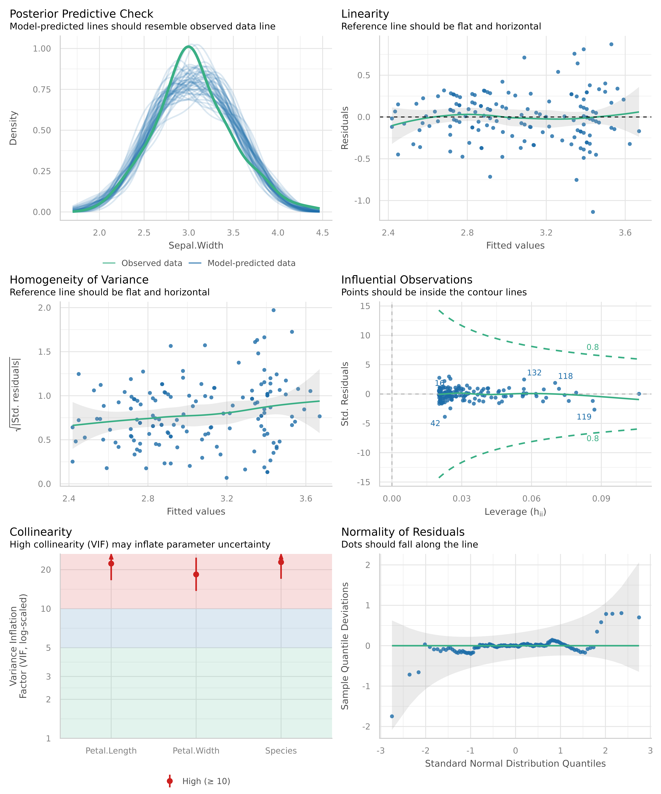

Make sure your model inference is accurate!
Checking model assumptions is crucial, because parameter estimation, p-values and confidence interval depend on correct model assumptions as well as on the data. If model assumptions are violated, estimates can be statistically signicant “even if the effect under study is null” (Gelman/Greenland 2019).
There are several problems associated with checking model assumptions. Different types of models require different checks. For instance, normally distributed residuals is important for linear regression, but not for logistic. Furthermore, it is recommended to carry out visual inspections, so called diagnostic plots, of model assumptions, since formal statistcal tests are often too strict and warn of violation of the model assumptions, although everything is fine within a certain tolerance range. But how should such diagnostic plots be interpreted? And if violations have been detected, how to fix them?
This vignette introduces the check_model() function of
the performance package, shows how to use this function
for different types of models and how the resulting diagnostic plots
should be interpreted. Furthermore, recommendations are given how to
address possible violations of model assumptions.
Are all assumptions for linear models met?
We start with a simple example for a linear model.
Before we go into details of the diagnostic plots, let’s first look at the summary table.
> Parameter | Coefficient | SE | 95% CI | t(145) | p
> ----------------------------------------------------------------------------
> (Intercept) | 3.05 | 0.09 | [ 2.86, 3.23] | 32.52 | < .001
> Species [versicolor] | -1.76 | 0.18 | [-2.12, -1.41] | -9.83 | < .001
> Species [virginica] | -2.20 | 0.27 | [-2.72, -1.67] | -8.28 | < .001
> Petal Length | 0.15 | 0.06 | [ 0.03, 0.28] | 2.38 | 0.018
> Petal Width | 0.62 | 0.14 | [ 0.35, 0.89] | 4.57 | < .001There is nothing suspicious so far. Now let’s start with model
diagnostics. We use the check_model() function, which
provides an overview with the most important and appropriate diagnostic
plots for the model under investigation.

Now let’s take a closer look for each plot. To do so, we ask
check_model() to return a single plot for each check,
instead of arranging them in a grid. We can do so using the
panel argument. This returns a list of ggplot
plots.
# return a list of single plots
diagnostic_plots <- plot(check_model(m1, panel = FALSE))Posterior predictive checks
The first plot is based on check_predictions().
Posterior predictive checks can be used to look for systematic
discrepancies between real and simulated data. It helps to see whether
the type of model (distributional family) fits well to the data
(Gelman and Hill, 2007, p. 158). Posterior predictive checks
can be used to “look for systematic discrepancies between real and
simulated data” (Gelman et al. 2014, p. 169).
# posterior predicive checks
diagnostic_plots[[1]]
parameters::model_parameters(m)
model <- lm(neg_c_7 ~ e42dep + c161sex + c172code, data = efc)
References
Gelman, A., Carlin, J. B., Stern, H. S., Dunson, D. B., Vehtari, A., and Rubin, D. B. (2014). Bayesian data analysis. (Third edition). CRC Press.
Gelman A, Greenland S. Are confidence intervals better termed “uncertainty intervals”? BMJ (2019)l5381. doi:10.1136/bmj.l5381
Gelman, A., and Hill, J. (2007). Data analysis using regression and multilevel/hierarchical models. Cambridge; New York: Cambridge University Press.